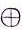

Capitolo 1 - Contare
Se la matematica e' un linguaggio... di cosa parla?
Si dice spesso che la matematica e' un linguaggio, o come disse Galileo  "la matematica e' l'alfabeto nel quale Dio ha scritto l'universo", che suona piuttosto fico. Ma se la matematica e' un linguaggio, allora dovrebbe essere possible usarla per esprimersi.
Per esempio, uno potrebbe dire: "un cane ha mangiato i miei compiti di matematica", oppure "i miei compiti? Penso che li abbia mangiati un cane...", o persino "oh no! Un cane grosso e cattivo si dev'essere mangiato i miei compiti di matematica!". Le tre frasi hanno lo stesso significato, ma hanno un tono, uno stile personale, diverso, e qualcuna di queste frasi potrebbe suonare piu' o meno convincente, diciamo, ad un insegnante (dico solo per dire).
"la matematica e' l'alfabeto nel quale Dio ha scritto l'universo", che suona piuttosto fico. Ma se la matematica e' un linguaggio, allora dovrebbe essere possible usarla per esprimersi.
Per esempio, uno potrebbe dire: "un cane ha mangiato i miei compiti di matematica", oppure "i miei compiti? Penso che li abbia mangiati un cane...", o persino "oh no! Un cane grosso e cattivo si dev'essere mangiato i miei compiti di matematica!". Le tre frasi hanno lo stesso significato, ma hanno un tono, uno stile personale, diverso, e qualcuna di queste frasi potrebbe suonare piu' o meno convincente, diciamo, ad un insegnante (dico solo per dire).
Questa e' un'idea importante: una cosa puo' essere scritta o espressa in vari modi (varia la sintassi), ma queste espressioni vogliono dire sempre la stessa cosa (hanno la stessa semantica).
Inoltre, scrivere qualcosa in un certo modo puo' essere utile: se scrivo una frase come soggetto-verbo-oggetto, di solito e' piu' semplice da analizzare o da tradurre in un'altra lingua; uno potrebbe decidere che "il cane mangia i compiti" e' un ottimo rappresentante di tutte le frasi che parlano di cani che mangiano i compiti, e per usare un parolone elegante si potrebbe chiamare questa frase la forma normale per tutte le frasi di cani mangia-compiti. Una forma normale e' quindi una specie di stampino, un modello, un buon rappresentante per una serie di cose che sembrano diverse (sintassi) ma hanno lo stesso significato (semantica).
La matematica e' piena di esempi di forme normali. Una frazione come 34 vuol dire 0.75, ma si puo' scrivere in molti altri modi: 68 , 912 , 1216 , 3040 , -3-4 , 1.52 , ecc. Queste frazioni non hanno lo stesso aspetto (sintassi) ma hanno lo stesso significato (semantica)... ma allora quale dovrei usare per significare "la frazione che ha valore 0.75"? Che sarebbe a dire: qual'e' la forma normale di una frazione? Ha senso scegliere come forma normale la notazione piu' semplice possibile per una certa entita' matematica: qui possiamo prendere la frazione con i valori piu' piccoli possibili (e quindi sicuramente non 3040), e sarebbe bello usare solo valori positivi se possibile (quindi non -3-4), e gia' che ci siamo evitiamo anche numeri con la virgola (cioe' numeri senza decimali, e quindi escludiamo anche 1.52). E allora il vincitore e'... 34, perche' non posso trovare due numeri piu' piccoli o piu' semplici, che diano lo stesso significato alla mia frazione.
A questo punto e' chiaro che posso prendere un oggetto matematico e riscriverlo, trasformarlo in un altro senza cambiare il suo significato. E allora uno potrebbe chiedersi: ma quali trasformazioni sono lecite? Nelle mie frasi sui cani mangia-compiti posso cambiare il tono e sono sicuro che il significato rimanga grossomodo lo stesso. Nel caso di una frazione, moltiplicare sia il numeratore (il numero sopra alla linea di frazione) che il denominatore (il numero di sotto) non cambia il valore della frazione; a meno che io non moltiplichi per 0, e in quel caso pero' la frazione perde di significato. Ad ogni modo, certi modi di riscrivere la mia frazione 34 sono piu' utili di altri, per esempio: 34 = 75100 = 300400 . Dire che qualcosa e' 75 su 100 mi aiuta a vedere che 34 e' anche il 75% di qualcosa. Oppure prendiamo un gruppo di 400 persone: dire che ce ne sono 300 con gli occhi marroni puo' essere piu' chiaro che non dire "34 hanno gli occhi marroni". Quindi anche la sintassi ha la sua importanza.
In questo libro cerchero' di convincerti che la maggior parte del lavoro che si fa in matematica e' basato sui concetti di forma normale, trasformazione, sintassi e semantica, e che potremmo benissimo riscrivere i nostri libri di testo rendendo piu' esplicito che il grosso della matematica ha a che fare con manipolazioni della sintassi per capire qualcosa della semantica. Inoltre, come ogni altra lingua, la matematica e' una costruzione collettiva di molte persone e serve a comunicare; questo vuol anche dire che la matematica e' cambiata nel tempo, quando serviva di parlare di problemi nuovi, via via che il mondo umano diventava piu' complesso. Storicamente la matematica e' anche cambiata quando non funzionava bene e aveva bisogno di essere aggiustata. Da questa prospettiva storica deriva che la matematica (e la sua notazione) e' stata INVENTATA in vari momenti storici, e' stata cambiata e migliorata, ed e' stata eventualmente formalizzata nello standard che usiamo oggi. Ha senso allora guardare all'evoluzione storica della matematica e ricostruire alcune delle notazioni e regole, con la speranza che facendo cosi' potremmo capirci qualcosa di piu', non solo nel senso di "come si fa?" ma anche nel senso di "da dove salta fuori questo?" e "perche' aiuta esprimere qualcosa in un certo modo?", e persino "come faccio ad essere sicuro che questo sia giusto?". Domande tipicamente proibite nella matematica della scuola.
Dare un nome ad ogni numero
Ok quindi sintassi e semantica, daccordo, ma le frazioni sono gia' un po' complicatine, non come i numeri interi. Un numero come 25 sara' solamente quello che e', no? Nessuna storia di sintassi e semantica, giusto? Come fa ad esserci una forma normale e delle sintassi alternative per un numero?
Be', iniziamo dal significato: contare dovrebbe avere a che fare con delle cose. Per esempio se ho queste pecore e ci aggiungo quelle altre pecore, avro' un totale di cosi' tante pecore. Magari e' meglio un DISEGNO per visualizzare la situazione:

- potrei usare la parola "pecora",
- oppure un gettone di argilla

- o meglio ancora un pittogramma che rappresenti il gettone 
- oppure semplicemente un simbolo I, che sarebbe una tacca, come si fa nel sistema unario.
Nota: posso anche definire la sottrazione in questo modo diretto, basta dire che se l'addizione e' "mettere assieme" allora la sottrazione sara' "togliere" qualche pecora da un gregge di altre pecore.
Contare con le tacche
Stavamo parlando di sintassi e semantica in matematica, no? Be' i nostri numeri per adesso sono piu' o meno solo semantica: III e' praticamente solo una scorciatoia per dire "ho tre cose", oppure "una cosa e una cosa e una cosa". E questo e' il problema centrale di questa notazione (unaria, a tacche): piu' cose voglio contare e piu' simboli I devo scrivere.
Un trucco potrebbe essere di raggruppare le tacche I per semplificare i conteggi: visto che e' facile riconoscere al volo fino a cinque cose, possiamo decidere di rappresentare cinque cose con un simbolo speciale, diciamo F.
Un'idea simile si trova trova nei
numeri Maya
e in quelli romani.
I miei numeri, con tacche ed il nuovo simbolo F, sarebbero cosi':
I, II, III, IIII, F, FI, FII, FIII, FIIII, FIIIII, FF, FFI, ecc.
Molto bene: questi numeri sono piu' corti e piu' facili da leggere. Pero' per numeri grandi, diciamo centinaia o migliaia, questa notazione e' ancora troppo lunga. E poi, cosa succede quando faccio le addizioni? Non posso piu' semplicemente "mettere assieme" i miei numeri, come si faceva con le tacche.
Per esempio: FII + FFIIII , che sarabbe sette piu' quattordici. Mettere assieme i due numeri mi darebbe: FIIFFIIII , che non ha nessun senso nel mio sistema di numeri. Perche'? Be', perche' non e' nella forma normale!
La forma normale qui e' che nessun numero puo' avere piu' di cinque I, perche' se no avremmo usato una F; inoltre non abbiamo definito cosa vuol dire mescolare le F e le I in un numero. Nella lista di numeri che ho scritto sopra tutti i numeri avevano sempre tutte le F piazzate all'inizio e le I dopo. Quindi un numero come FIIFFIIII e' scritto male, e quindi e' sbagliato per vari motivi. Prima di tutto dovrei riscriverlo mettendo tutte le F all'inizio, e poi dovrei togliere gruppi da cinque I e rimpiazzarli con dei simboli F, che mettero all inizio del numero; il risultato e':
FIIFFIIII → FFFIIIIII → FFFFI
che fa ventuno.
Ma come faccio ad essere sicuro che la somma FII + FFIIII faccia ventuno? Posso fare leva sulla semantica dei due numeri, e convertire cifra per cifra in una sequenza di tacche, metterle tutte assieme e vedere cosa ottengo:
FII → IIIII II
FFIIII → IIIII IIIII IIII
E mettendo tutte le tacche assieme viene: IIIII II IIIII IIIII IIII = IIIIIIIIIIIIIIIIIIIII , che e' difficile da leggere. Se raggruppo le tacche a gruppi da cinque ottengo: IIIII IIIII IIIII IIIII I , che e' proprio ventuno!
Prova a vedere come e' fatto il nostro amico ventuo. E come sara' 210?
Come sarebbe fatto zero?
Morale della storia fin qua: il sistema unario funziona, ma i numeri diventano troppo lunghi. Definire notazioni abbreviate per i numeri aiuta, ma poi mi tocca ridefinire cosa vuol dire fare addizioni. Fare un'addizione dovrebbe significare mettere assieme delle cose, ma quando uso una notazione per i numeri che non sia l'unario, sono costretto a definire regole speciali basate sulle cifre dei due numeri (su come sono scritti) e non sul loro significato, perche' voglio poter sommare numeri usando la loro sintassi e non la loro semantica. E devo anche essere sicuro che le nuove regole per fare le addizioni diano lo stesso risultato dell'addizione per i numeri unari, per tutti i casi possibili.
Mi serve lo zero
Invece di usare solo delle tacche o simboli I, che poi sarebbe il sistema unario, potremmo esplorare un'altra direzione. Potremmo usare delle scatole per scrivere in nostri numeri-tacca in un modo piu' corto.
Per esempio posso decidere che 10 pecore formano un gregge. E allora se ho trentaquattro pecore, posso dire che ho tre greggi e quattro pecore.
Usando una scatola per le pecore e una per i greggi, il numero trentaquattro si puo' rappresentare cosi':
+-GREGGI-+ +-PECORE-+ | III | | IIII | | | | | +--------+ +--------+E di nuovo si vede che disegnare due scatole ogni volta che devo scrivere un numero e' troppo lavoro... meglio scrivere semplicemente: IIIIIII. E attenzione! L'ordine delle scatole conta, visto che IIIIIII NON E' lo stesso che IIIIIII! (spoiler! Il primo numero e' 34 mentre il secondo e' 43)
Vediamo cosa riusciamo ad esprimere con questa nuova notazione (cioe' sintassi). Come faccio a scrivere per esempio uno, che sarebbe I? Dovrebbe essere cosi': ???I Ma cosa devo mettere nella scatola dei greggi? Niente, no? Ma non ho un simbolo per NIENTE in unario; e allora dobbiamo decidere come dire "zero" nella nostra nuova notazione, visto che l'unario non ci puo' aiutare. Per esempio possiamo usare una scatola vuota, e allora il numero uno diventerebbe: I . Bene, e adesso posso scrivere un po' di numeri per vedere che aspetto hanno: zero = , uno = I, due = II, III, IIII, IIIII, IIIII I, IIIII II, IIIII III, nove = IIIII IIII, dieci = I , undici = II, dodici = III, IIII, etc.,
IIIII, IIIII IIIII, etc., novantanove = IIIII IIIIIIIII IIII.
Questo si che e' un miglioramento rispetto all'unario! Confronta un po' IIIII IIIIIIIII IIII con la sua versione in unario: IIIIIIIIII IIIIIIIIII IIIIIIIIII IIIIIIIIII IIIIIIIIII IIIIIIIIII IIIIIIIIII IIIIIIIIII IIIIIIIIII IIIIIIIII !
Nota: a questo punto potremmo voler imporre delle restrizioni alla nostra notazione con le scatole, e accettare solo numeri che hanno zero, uno, ..., nove I in ogni scatola, e non di piu'. Se non facciamo cosi' qualcuno potrebbe scrivere il numero dodici in questo modo IIIII IIIII II e anche in questo modo III, e queste due rappresentazioni avrebbero lo stesso significato (la stessa semantica). Vogliamo che si possa scrivere lo stesso un numero in due (o piu') modi? E' una buona idea permetterlo? Ne parleremo piu' avanti.
Morale della storia fin qua: se usiamo una sequenza ordinata di scatole per arrangiare i numeri in unario (cioe' un sistema posizionale) otteniamo una notazione molto piu' corta, ma dobbiamo definire una convenzione per rappresentare lo zero. E purtroppo non sappiamo come sommare due numeri in scatola senza tornare alle loro espressioni in unario. Cioe' non sappiamo come calcolare III + IIIII usando solo la loro sintassi, le loro cifre.
Ed ecco l'abaco
Ovviamente non voglio usare F e I, ma i simboli: 0, 1, 2, 3, 4, 5, 6, 7, 8, 9.
Ma cosa faccio se ho piu' di 9 cose? Cioe' piu' di IIIII IIII cose?
Invece di inventarmi nuovi simboli (come F) potrei raggruppare i simboli e dare un significato alla loro posizione: proprio come abbiamo fatto per la scatola dei greggi e quella delle pecore, solo che questa volta usiamo una scatola per le unita', una per le decine, centinaia, ecc. Il risultato e' lo stesso che se usassimo un abaco.
Come sara' fatto il nostro vecchio amico ventuno, qui sull'abaco?
L'ordine dei simboli conta nell'abaco? Prova a scrivere 34 e poi 43...
Bene, quindi possiamo definire i numeri usando l'abaco; e' interesante notare che le aste dell'abaco crescono di 10 volte ogni volta che ci spostiamo verso sinistra, e per questo motivo questa notazione si chiama base 10.
Come converto un numero da questa notazione alla mia notazione originale a tacche (cioe' unaria)? Come diventa 23 sull'abaco, se lo scrivo con soli simboli I?
Per prima cosa devo guardare a 23 come se fosse un testo e non un numero, perche' semanticamente solo i numeri in unario sono veri numeri. Quindi 23 e' in realta' 23, dove le cifre 2 e 3 sono abbreviazioni per i numeri II e III. Quindi il mio numero 23 si puo' scrivere in unario con due scatole: IIIII.
Allora per trovare il vero valore di 23 devo calcolare 2 * 10 + 3 * 1 dove "*" sta per "volte" cioe' e' una moltiplicazione.
Questo tipo di espressione matematica e' una somma pesata o combinazione lineare, e in questo libro sosterro' che la combinazione lineare e' una delle idee nascoste ma centrali della matematica.
Pero' NON SO ancora come calcolare il risultato di 2 * 10 + 3 * 1 quindi devo passare per i numeri unari. Iniziero' rimpiazzando ogni cifra in base 10 con la sua controparte in unario:
2 * 10 + 3 * 1 →
2 * IIIII IIIII + 3 * I →
II * IIIII IIIII + III * I
e adesso basta che definiamo la moltiplicazione tra numeri unari, ma quello e' facile.
Infatti
II * unCertoNumeroUnario e' semplicemente
unCertoNumeroUnariounCertoNumeroUnario, e qualsiasi numero moltiplicato per I rimane lo stesso.
Quindi,
II * IIIII IIIII + III * I →
IIIII IIIII IIIII IIIII + III
che e' 23 usando la notazione dell'abaco. E vai!
In generale qualsiasi numero che posso scrivere nella forma ABCD ha un valore (semantica) di
A * 1000 + B * 100 + C * 10 + D *1
dove A, B, C e D sono numeri unari, oppure espressi come gruppi di pecore.
E visto che vogliamo usare l'abaco, dobbiamo anche assumere che A, B, C e D possano solo essere numeri da una cifra, cioe' 0, 1,... , 9.
Questo tipo di notazione e' molto comune: giorni-ore-minuti funzionano nello stesso modo, e anche i gradi degli angoli (solo che usano base 60 invece che la based 10 del nostro abaco).
Qual'e' la forma normale per i numeri sull'abaco? Posso scrivere lo stesso numero in modi diversi? E cosa succede all'addizione (e sottrazione) tra numeri dell'abaco?
Prendiamo ad esempio il numero 13, cioe' 13.
E' in forma normale rispetto all'abaco perche' posso mettere 1 e 3 palline sulle aste, e non violo la restrizione che ogni asta dell'abaco deve sempre avere tra 0 e 9 palline.
Come farei a scrivere 13 in altri modi? Be' se non seguo la resitrizione, posso scrivere 13 come
013 e il suo valore e' ancora IIIII IIIII III, o se preferisci 0 * 10 + 13 * 1.
Ora scrivere 13 come 013 puo' sembrarti strano, ma e' modo piuttosto tipico di scrivere numeri. Per esempio nelle misure
imperiali inglesi uno puo' scrivere tranquillamente:
2 iarde e 4 piedi, oppure 2.4 . Usando le nostre scatole questo numero diventerebbe 24, e convertendo tutto in piedi avrei 2 * 3 + 4 (visto che 1 iarda e' definita come 3 piedi), e il risultato sarebbe 10 piedi, cioe'
010. Quindi con le misure imperiali inglesi 24 e' lo stesso che 010.
OK, ma adesso parliamo dell'addizione. Seguendo la strategia che abbiamo usato prima per i numeri unari possiamo dire: metti assieme i numeri, scatola per scatola ma qui non e' sufficiente fare cosi'. Dobbiamo aggiungere questo: ... poi aggiusta i numeri in modo che siano in forma normale (per l'abaco). Prova a giocare un po' con questa idea facendo delle somme tra due numeri con i due abachi qua sotto.
Tieni conto che quando selezioni l'opzione "forma normale" vedrai i risultati corretti, cioe' in forma normale. Il risultato della somma e' rappresentato nell'abaco piu' a destra.
Allora, qual'e' la regola per sommare due numeri sull'abaco? Semplice: somma asta per asta; pero' in questo modo potrebbero venire fuori dei risultati scritti in modo scorretto (cioe' non in forma normale), e in quei casi ti tocca aggiustare il risultato.
Pero' mentre aggiusti una cifra (cioe' le palline di un'asta) potresti creare dei nuovi problemi nell'asta che viene dopo. Quindi la cosa migliore e' partire ad aggiustare un risultato dalla cifra piu' bassa (quella piu' a destra) e poi proseguire con la prossima (andando verso sinistra), e continuare finche' tutte le cifre sono aggiustate.
Ad esempio:
234 +
567 = ?
= 2+53+64+7
= 7911.
L'area gioco sopra usa due abachi per fare una somma tra due numeri e poi mostra il risultato nel terzo abaco, quello a destra.
Prova a fare questa addizione 234 + 567, con e senza mettere il risultato in forma normale, e vedi cosa succede.
Sfortunatamente il risultato 7911 NON e' in forma normale per un abaco, e quindi dobbiamo aggiustarlo:
7911 →
7911 -10+10 →
7911-10 +10 →
791 +10 →
79+11 →
7101
Qui sto usando un trucco che mi aiuta a vedere quanto un numero come 11 va oltre il 10. Sottraggo e sommo 10 al mio numero 11 e lo RISCRIVO un po', tanto sono sicuro che il valore resta inalterato. Infatti: 11 = 11+(-10+10) = (11-10)+10 = (1)+10, e cosi' adesso so che 11 era 1 di piu' di cosa avrebbe dovuto essere per starci nelle aste dell'abaco.
E cosi' il mio risultato diventa
7101,
che pero' non e' ancora in forma normale, e allora devo continuare con le decine e se serve anche con le centinaia:
7101 →
710 -10+101 →
70+101 →
7+101 →
801
Fatto. Aggiustato.
Questa procedure potrebbe sembrarti vagamente familiare. Ed e' infatti piu' o meno quello che ci insegnano alle elementari quando impariamo le addizioni per la prima volta: e' la somma con il riporto.
E la difficolta' di fare somme con i riporti viene dal fatto che sommare due numeri scritti in questa forma (invece che in unario, dove i numeri sono tutti fatti di I) puo' generare risultati che non sono in forma normale, e quindi ci tocca usare dei trucchi per riscrivere i risultati in forma normale.
Nel nostro esempio 234 + 567 siamo passati attraverso varie rappresentazioni del risultato, che hanno tutte lo stesso valore (semanticamente sono uguali) ma sono scritte in modo diverso, e solo un modo di scrivere il risultato e' accettabile (perche' e' l'unico che e' in forma normale):
7911,
7101,
801.
E' interessante confermare che il valore di tutti e tre i numeri e' lo stesso (e possiamo farlo usando la nostra combinazione lineare di potenze di 10):
7911 → 7 * 100 + 9 * 10 + 11 * 1 → 700 + 90 + 11 → 801
7101 → 7 * 100 + 10 * 10 + 1 * 1 → 700 + 100 + 1 → 801
801 → 8 * 100 + 0 * 10 + 1 * 1 → 800 + 0 + 1 → 801
Come definiresti la sottrazione usando l'abaco?
Usa l'abaco all'inizio di questa sezione.
Prova con qualche esempio, per vedere se la tua definizione funziona o se rompe la forma normale.
Morale della storia fin qua: se la matematica e' un linguaggio... di cosa parla?
Principalmente la matematica parla di contare, e contare ha a che fare con i numeri (perche' le pecore richiedono troppo spazio). Gli unici veri numeri son i numeri unari, perche' il modo in cui sono scritti (sintassi) ci dice immediatamente che valore hanno, cosa vogliono dire (semantica). Addizioni e moltiplicazioni sono piuttosto facili su numeri fatti solo di tacche o di simboli I.
Ma i numeri unari diventano facilmente troppo lunghi e noiosi da usare, e allora ci inventiamo delle notazioni abbreviate. Ma queste notazioni ci costringono a ridefinire l'addizione (e anche la sottrazione e moltiplicazione) in modo che funzioni per i numeri scritti nella nuova notazione
(perche' ha senso che le operazioni sui numeri dipendano dalla sintassi con cui i numeri sono scritti).
Raggruppare i numeri in scatole, o rappresentare i gruppi come aste dell'abaco, e' una buona idea e da' una ricetta per come definire la sintassi per i numeri. Usando queste notazioni pero' dobbiamo tenere conto che qualche gruppo (o asta) potrebbe essere vuoto, e allora ci inventiamo un modo di scrivere lo zero.
Per ogni notazione che esploriamo ci chiediamo: qual'e' la forma normale (cioe' il modo corretto di scrivere un numero in quella notazione), in quali altri modi possiamo scrivere lo stesso numero, e come possiamo trasformare un numero in modo che cambi la sua sintassi ma non il suo valore (semantica). E poi usiamo queste idee per definire addizione (e altre operazioni) per ogni nuova notazione che inventiamo.
E a volte potremmo aver bisogno di fare una somma pesata (detta anche combinazione lineare) per trovare qual'e' il significato di un numero. Per esempio con l'abaco dobbiamo fare una combinazione lineare di potenze di 10 per trovare che numero corrisponde a un certo insieme di palline disposte sulle aste. Le somme pesate sono un intressante misto di addizioni e moltiplicazioni. Ma la moltiplicazione non e' costruita SOPRA all'addizione? La moltiplicazione e' una specie di addizione ripetuta no? E se e' cosi', che senso ha mescolare le due operazioni?
Tutte domande interessanti sicuramente, ma le dovremo riprendere in un altro capitolo.
Puzzle
(1) Lavoriamo con le misure di tempo: giorni-ore-minuti.
I seguenti numeri non sono corretti. Riscrivili nella loro forma normale (che sarebbe: non piu' di 23 ore e non piu' di 59 minuti in ogni numero) senza cambiare il loro valore. E poi riscrivi ogni numero in minuti.- 0185 in giorni-ore-minuti = ?????? = ? minuti
Le domande qui sono: "come scrivo corretamente 1 ora e 85 minuti?", e "quanti minuti ci sono in 1 ora e 85?" - 128125 = ?????? = ? minuti
- 72370
(1.1) Somma le seguenti coppie di numeri (sempre misure di tempo) e scrivi i risultati nella corretta forma normale:
- 02040 + 2321 = ? giorni?? ore??? minuti
- 11225 + 21855 = ?
(2) Contare cani, cioe' come creare un nuovo sistema numerico.
Diciamo che in un quartiere ci sono molti cani. Invece di contarli usando tacche (cioe' usando i numeri unari) vuoi creati delle tue abbreviazioni per contare numeri-cane. E allora decidi di fare cosi': C rappresenta 1 cane, quando ci sono tre cani assieme iniziano ad abbaiare quindi A sta per 3 cani. Se metti assieme due gruppi da cani che abbaiano viene fuori uno spettacolo musicale, e quindi M sta per due A. Come esempio considera il numero CCAMMM: 2 cani, 1 gruppo abbaiante, e 3 spettacoli musicali di cani, cioe' in tutto 2 cani + 1 * 3 cani + 3 * 6 cani = 23 cani. Gia' che ci siamo decidiamo anche che l'ordine delle lettere non conta in questa notazione: cioe' CCA (che poi sarebbe 1+1+3 = 5 cani) e' lo stesso che scrivere CAC oppure ACC. La forma normale qui e' solo che non ci possono essere piu' di 2 simboli C in ogni numero (perche' se ci sono 3 C, dovresti sostituirle con una A), e inoltre non ci puo' essere piu' di una A. Tenendo presente questa storiella di cani e numeri strampalati, riscrivi i seguenti numeri in forma normale, dove serve, e calcola quanti cani sono rappresentati da ogni numero (cioe' il loro valore in unario o in base 10 se preferisci):- CCCCC = ? M?? A??? C = ? cani
- CM
- MACMCMM
- AMC
- MCCM
- AC
- ACAC
- AMCAMC
(2.1) Adesso crea una regola per sommare due numeri-cane. Prova la tua regola su questi numeri:
- CC + CC = ? M?? A??? C
- AMC + AMC
- MACMCMM + AMC
Ti e' capitato di dover aggiustare il risultato di una delle addizioni? Hai dovuto considerare i riporti per far funzionare la tua regola?